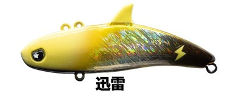
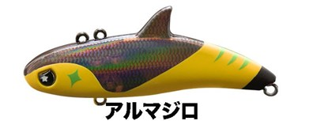
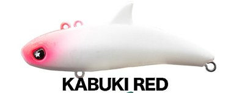
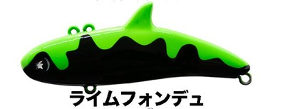

ディモル70
（DIMOR70）
ディモル70（DIMOR70）はLEGARE（レガーレ）のバイブレーションです。
アイを替えるだけで、2つのアクションを使い分け。主なターゲットはシーバスです。
デイ・ナイトを問わず使う機会の多いバイブレーションだからこそ、攻め方も多様に使いたい。そんな思いから「LEGAREらしいバイブレーション」として生まれたのがDIMOR70です。

画像出典:LEGARE公式HP
スペック
- メーカー
- LEGARE（レガーレ）
- タイプ
- シンキング
- 全長
- 70mm
- 重量
- 18g
- フック
- #8
- リング
- #2
- アクション
- フロントアイ：タイトピッチ／リアアイ：スタンダード／フォール：水平に近いフォール
- 価格
- 1,850円（公式オンラインストア価格）
▼今すぐチェック
ディモル70の特徴
2アイシステムで、弱い波動と強い波動を1本で
-
フロントアイは弱いタイトピッチ
水平に近い姿勢で泳ぎ、速巻きでも引き抵抗が軽い。スローに巻けばシンペンのようなイメージでも使え、マイクロベイトやアミパターンにも対応する。
-
リアアイはスタンダードなバイブレーション
しっかりしたアクションで広い範囲の魚にアピールする。リフト＆フォールのメリハリのある動かし方で、縦の釣りにも対応。
-
水平に近いフォール
フォールは水平に近い姿勢で沈む。どちらのアイでも、デイ・ナイトや巻く速さを問わず幅広い状況で使える。
ディモル70の使い方
まずはリアアイに結んで、ただ巻きやリフト＆フォールで広く探りましょう。
反応がない時や、マイクロベイト・アミを食べている時は、フロントアイに結び替えてスローに巻きます。弱いタイトピッチの動きで、シンペンのように食わせられます。
ディモル70の得意な状況
港湾や河川、干潟など、シーバスのいる場所を広く探りたい時が得意です。
バイブレーションでは強すぎる時でも、フロントアイで弱い動きにできるので、1本で状況の変化に合わせやすいルアーです。
ワンポイント
アイを替える時はスナップを付け替えるだけ。ルアーを交換しなくても強弱を変えられるので、手返しよく反応を見られます。
オススメカラー
ディモル70は全20色。そのうち4色を紹介します（画像は公式のカラーチャートより）。

迅雷まず1つ選ぶならこの色。フラッシングでアピール。

アルマジロダークな背中にイエローのベリー。シルエットとアピールを両立。

KABUKI RED白いボディにピンクのヘッド。濁りや夜にも見えやすい。

ライムフォンデュライム系で視認性が高い。濁りや夜にも。
画像出典:LEGARE公式HP
ディモル70に似ているルアー
-
 カンナ18
ポップシークルー
詳細はこちら＞
カンナ18
ポップシークルー
詳細はこちら＞
同じ18gクラスのバイブレーション。ボトムのヒラ打ちドリフトに。
-
 ツクモ
ジャッカル
詳細はこちら＞
ツクモ
ジャッカル
詳細はこちら＞
シーバス向けのバイブレーション。
-
 クランビット
GOTO9
詳細はこちら＞
クランビット
GOTO9
詳細はこちら＞
同じ若手アングラー率いるGOTO9のバイブレーション。